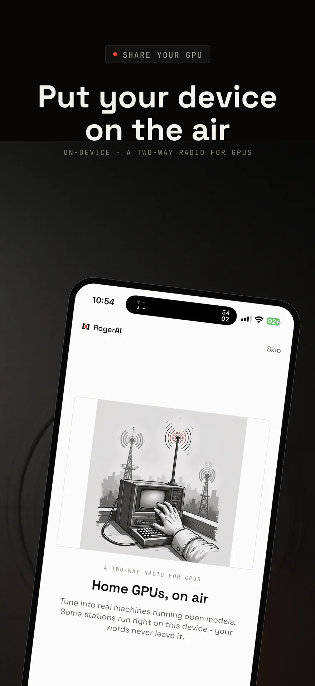
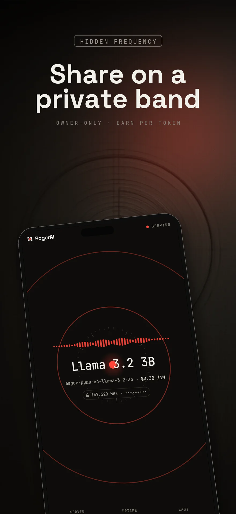
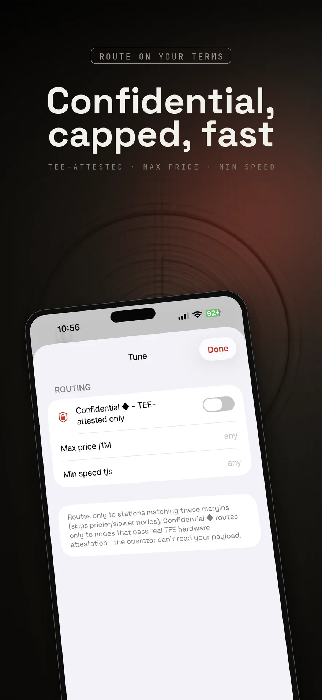

Run an LLM on your iPhone - and put it on the air
The phone in your pocket can download a language model, answer with the radio off, and - since v1.2 - broadcast that model to the people you choose. Here is what a handheld can honestly do, and how to do it.

Quick answer. Yes - the free RogerAI app downloads a compact MLX model onto an iPhone or iPad and runs it fully on-device, no account and no signal needed. Since v1.2 the same phone can share that model on the RogerAI band: to everyone, to a hidden private frequency only people with your code can tune, or at a price that earns - from any device, phone included.
Can an iPhone really run a language model?
A modern iPhone runs compact models well. The app's model manager downloads an MLX model - Apple-silicon-native weights, a few gigabytes - and from then on it answers on the phone itself. Airplane mode works. Your words never leave the device, which is not a policy claim but a topology one: there is no server in the sentence.
Apple Intelligence's on-device model rides alongside as a free built-in station, and the same app tunes the wider band of community machines when you want a bigger brain than a pocket carries.
How do I put my phone's model on the air?
One switch. The share screen takes any model the device can serve - a downloaded MLX model on iPhone or iPad, or on a Mac whatever your local servers already run (Ollama, LM Studio, Osaurus, llama.cpp) - and registers it as a real station on the band, with a callsign and a live On Air screen. On a phone, serving runs while the app is open: iOS cannot run the model with the screen locked, so the app keeps the screen awake on air, and a Dim mode darkens it for a phone left quietly on a shelf.
The phone comes first, always: sharing pauses itself when the battery runs low or the device runs hot, and resumes when things settle. Stations dial out - nothing ever opens a port on your network or knocks on your door.
What is a private band?
A station you broadcast on a hidden frequency: it never appears on the public dial, and only people holding your invite code can tune it. It is the family-and-friends shape of the network - your old laptop's model serving your own phone from home, or a workroom sharing one machine - with the same receipts and the same outbound-only privacy as everything else on the band. Going private takes the same one-time login as earning; free public sharing needs none.

What can a Mac do that a phone can't?
Scale. A Mac runs multiple models on air at once, mixes earning and free tiers side by side, and fronts the local servers you already keep running. The money works the same from any device: set dollars per million tokens on the share screen's price stepper - phone included - and keep 90% of what your station earns. The practical difference is uptime: a phone serves while the app is open, the Mac is the one you leave on air around the clock.
How do I keep control when I tune the wider band?
The Tune sheet carries three dials: a max price per million tokens that rides every request, a minimum speed floor, and a Confidential toggle that routes only to stations passing real TEE hardware attestation - nodes whose operators cannot read your payload. Everything else on the open band still sees only a station making calls: not your name, not your card, not your IP.

What does it cost?
The app is free - 39 MB, universal for iPhone, iPad, and Apple-silicon Macs. On-device models and free stations need no account at all: install, tune in, talk. Paid stations bill per token at the operator's posted rate from a prepaid wallet with a $1 starter credit; there is no subscription anywhere in the system.
Download RogerAI on the App Store →
Terminal person? curl -fsSL https://rogerai.fm/install.sh | sh
Questions people actually ask
- Which iPhones can run a local LLM?
- The app requires iOS 17 or newer. Compact MLX models run comfortably on recent iPhones and iPads; the model manager only offers weights that fit your device, and Apple Intelligence's on-device model is available as a built-in free station besides.
- Does a local model on my phone send anything to a server?
- No. A downloaded model answers on the device - it works in airplane mode. Only tuning a remote station on the band sends your words to the machine that answers them, and even then the upstream sees a station's callsign, never your identity.
- Can I share from an iPhone, or only from a Mac?
- Both, since v1.2. An iPhone or iPad shares a downloaded MLX model; a Mac additionally fronts local servers like Ollama, LM Studio, Osaurus, and llama.cpp, and can run several models on air at once.
- Will sharing cook my battery?
- The phone comes first: sharing pauses itself when the battery runs low or the device runs hot, and resumes when things settle. Serving needs the app open with the screen awake (iOS cannot run the model with the screen locked), so the On Air screen has a Dim mode built for a phone left quietly on a shelf.
- Who can tune into my private band?
- Only people with your invite code. A private band broadcasts on a hidden frequency that never appears on the public dial; everyone else cannot even see it exists.
- Can I earn money sharing from the app?
- Yes, from any device - the share screen's price stepper sets a per-million-token rate right on the phone, and you keep 90%, settled like any station on the band. Setting a price (or going private) takes a one-time login so earnings have somewhere to accrue; the broker caps the top price and says so if yours is over.
- Do I need an account to use it?
- Not for on-device models, free stations, or free public sharing - the app starts anonymous. An account enters the picture when you spend from a wallet on paid stations, set a price to earn, or broadcast a private band.